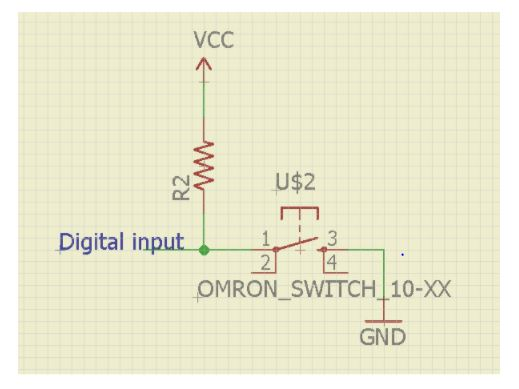

DIGITAL INPUTS¶
DIGITAL INPUTS¶
(images needs to be added here)
In many cases, you only need to know one thing about the physical world: Whether something is true or false. Is the viewer in the room or out? Are they touching the table or not? Is the door open or closed? In these cases, you can determine what you need to know using a digital input, or switch. Digital inputs have two states: off and on. If voltage is flowing, the circuit is on. If it’s not flowing, the circuit is off. To make a digital circuit, you need a circuit, and a movable conductor which can either complete the circuit, or not.
PULL UP Configuration¶
In pullup configuration, when switch is pressed then arduino digital pin is connected to ground. So, input pin will read it as logic low. When switch is released then pin is connected to vcc via a resistor. The pin will read it as logic high.
PULL DOWN Configuration¶

In pulldown configuration, when switch is pressed then arduino digital pin is connected to vcc. So, input pin will read it as logic high. When switch is released then pin is connected to ground via a resistor. The pin will read it as logic low.